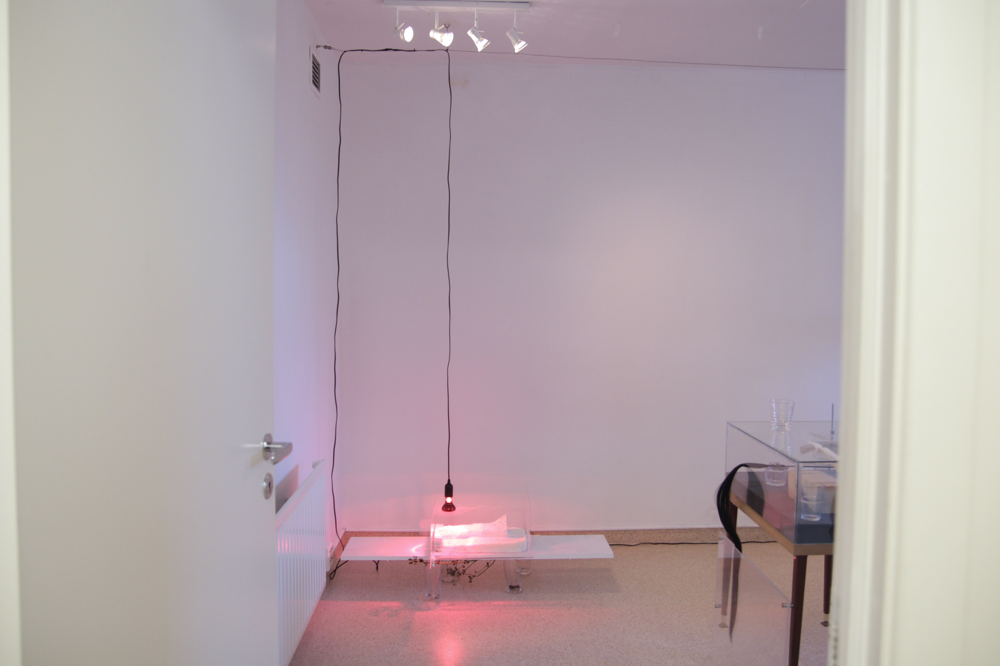
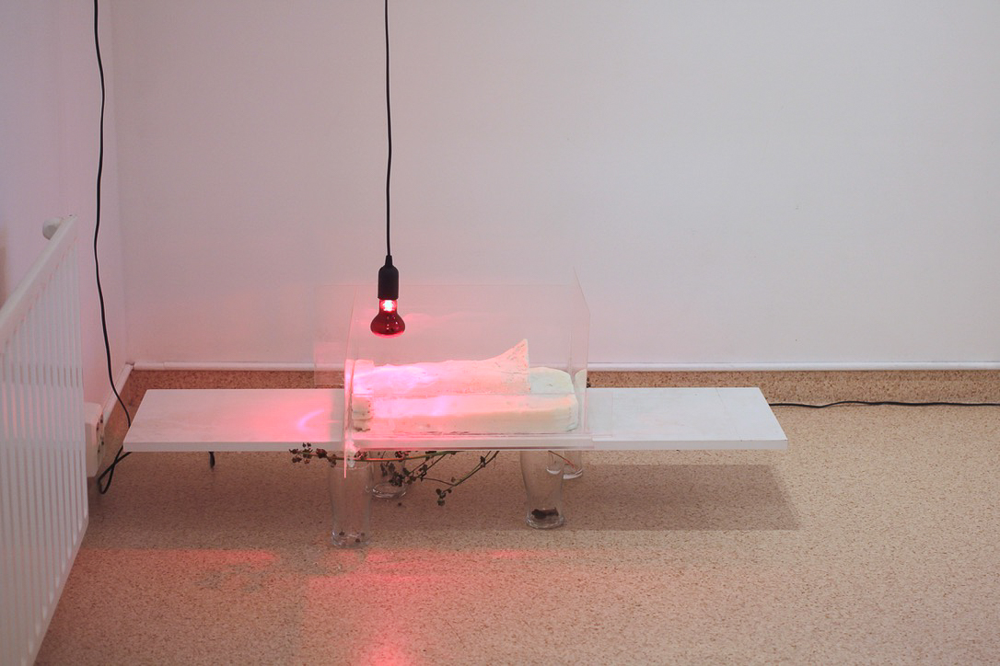
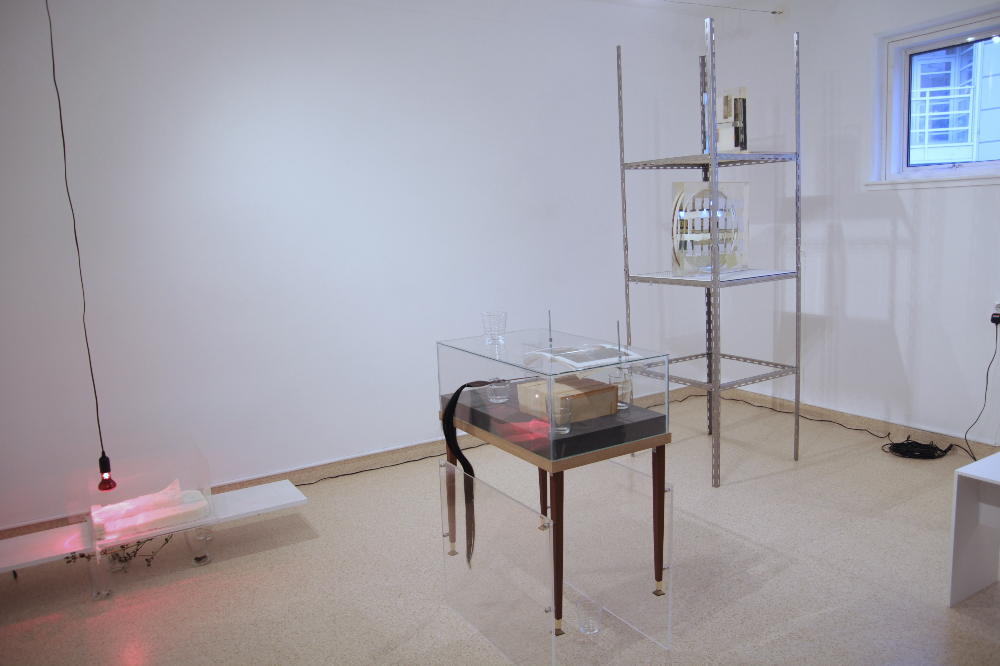
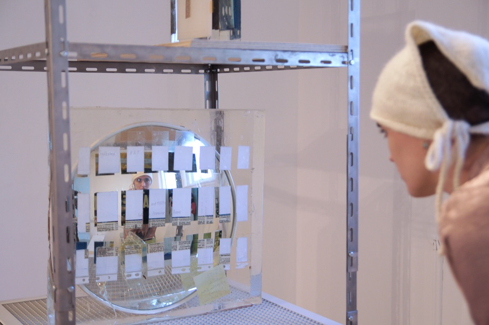

Transparent Silicone, White Bones and Mother, installation view, 2023
silicone, found photos, metal, mirror, MDF, found photos, books, glass cup, wax, plastic sheet, wood, infrared light, and other mixed media
dimensions variable
- I am interested in unstable materials and phenomena that are transformed by gravity and physical changes over time.
These materials are like a reflection of my own body, which also experiences transformation under the ceaseless influence of gravity and the passage of time.
My fascination with these unstable materials arises from questions about the systems, structures, and society that surround me, mirroring my own precarious existence.
In my work, I explore the interplay between the social structures and systems that envelope individuals, forming a larger ideological framework that flows through their lives.
I engage in the work of shaping materials, including my own body, which exists temporarily in an unstable state due to physical constraints, in contrast to the ever-flowing and enduring ideologies that follow.
The core of my practice revolves around the concept of "casting," with a particular focus on the structural characteristic of mould.
This is not just a method for replicating objects; it involves enclosing a specific object, creating a mould, emptying its insides, filling it with other materials, and enduring a period of silence as something new is born.
In this process, I imagine the artificial womb enveloping and nurturing the birth of a foetus.
The resulting object is connected to the existence of 'self’ that is solidified within the mould, regulated by an unspecified multitude of relationships, categorised by race, gender, nationality and more.
This work began with the act of collecting early 20th-century photographs of Korean women.
The figures of these photos, traded on international second-hand markets, are linked to me through the shared categories of ‘Korean’ and ‘women’.
The individuals in the collected photos are intentionally structured within a small archive case that I have constructed.
This archive case serves as a place where time appears to stand still, yet it represents a grand ideological entity, perpetually in motion for those who observe it.
This is juxtaposed with materials that melt or disappear easily due to the passage of time and physical interactions.
Everything encompassed within my work, from the fragile and ephemeral materials to the enduring and structured cold elements, contributes to shaping my existence, intricately woven with my flesh, bones and the structures of society.
It is also an attempt to start a dialogue with those who encounter the work, those who are each casted in their own set of categories and frameworks.




